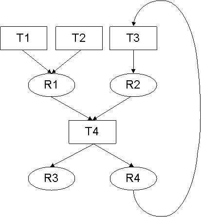

| | | A Chord Project: Tasks, Targets, and Dependencies |
In order to facilitate heavy reuse and rapid prototyping, each analysis in Chord is written modularly, independent of other analyses, along with lightweight annotations specifying the inputs and outputs of the analysis. In each run, upon startup, Chord organizes all analyses and their inputs and outputs (collectively called analysis results) using a global entity called a project. More concretely, a project consists of a set of analyses called tasks, a set of analysis results called targets, and a set of data/control dependencies between tasks and targets.
The project built in a particular run is of either of the following two kinds, depending upon whether the value of property chord.classic is true or false, respectively.
Tasks: There are two kinds of tasks corresponding to the two broad kinds of analyses in Chord: those written imperatively in Java and those written declaratively in Datalog. They are summarized in the following table:
| Kind: | imperative (see Chapter *) | declarative (see Chapter *) | ||||||
| Location: |
|
| ||||||
| Name: | via stmt name="<NAME>" in @Chord annotation | via line "# name=<NAME>" in .dlog file | ||||||
| Form: | an instance of the @Chord-annotated class |
|
Each task in Chord is of the form "{ C1, ..., Cn } T { P1, ..., Pm }" where:
Targets: The set of targets in a project includes each target that is specified as consumed/produced by some task in the project. When defining tasks, the user implicitly or explicitly provides the class (type) of each target. Chord reports a runtime error if a target has no type or has multiple types. Otherwise, it creates a separate instance of that class to represent that target.
Dependencies: Chord computes a dependency graph as a directed graph whose nodes are all tasks and targets computed as above, and:
We next present an example project to illustrate various concepts in the rest of this chapter:
{} T1 { R1 }
{} T2 { R1 }
{ R4} T3 { R2 }
{ R1, R2 } T4 { R3, R4 }
|
The set of tasks in this project is { T1, T2, T3, T4 } and the set of targets in the project is { R1, R2, R3, R4 }. The dependency graph is as follows:

ITask getTask(String name) | Representation of the task named name. |
Object getTrgt(String name) | Representation of the target named name. |
ITask runTask(String name) | Execute the task named name. |
boolean isTaskDone(String name) | Whether task named name has alread been executed. |
boolean isTrgtDone(String name) | Whether target named name has already been computed. |
void setTaskDone(String name) | Force task named name to not be executed the next time it is demanded. |
void setTrgtDone(String name) | Force target named name to not be computed the next time it is demanded. |
void resetTaskDone(String name) | Force task named name to be executed the next time it is demanded. |
void resetTrgtDone(String name) | Force target named name to be computed the next time it is demanded. |
We next explain the above methods.
The getTask(name) and getTrgt(name) methods provides the representation of the unique task or the unique target, respectively, with the specified name, if it exists, and a runtime error otherwise.
A "done" bit, initialized to false, is kept with each task and each target in the project. The operation of the remaining methods above involves this bit.
The runTask(name) method runs the task with the specified name, if it exists, and reports a runtime error otherwise. Running a task proceeds as follows. If the done bit of the task is true, no action is taken. Otherwise, suppose the task is of the form "{ C1, ..., Cn } T { P1, ..., Pm }". Then, the following two actions are taken in order:
It is the user's responsibility to ensure termination in the case in which there are cycles in the dependency graph. The isTaskDone(name) and isTrgtDone(name) methods can be used in the code T of any task to enquire whether the done bit of the task or target with the specified name is set to true. Moreover, methods setTaskDone(name), setTrgtDone(name) can be used to set the done bit of the task or target with the specified name to true, and likewise, methods resetTaskDone(name) and resetTrgtDone(name) can be used to set the done bit to false.
It is possible to run tasks from the command-line of Chord by specifying the value of property chord.run.analyses as a comma-separated list of the names of tasks to be run in order (see Chapter *).
We next illustrate the above concepts using the above example. Suppose Chord is run with the value of property chord.run.analyses as "T4". This causes runTask(T4) to be called. The done bit of task T4 is initialized to false. Hence, the done bit of its first consumed target R1 is checked. Since it is also initialized to false, the unique task producing target R1 is demanded. However, multiple tasks T1 and T2 producing target R1 are found in the project, resulting in a runtime error which reports the ambiguity between tasks T1 and T2.
To resolve the ambiguity (say in favor of task T1), the user can specify the value of property chord.run.analyses as "T1,T4". This time, runTask(T1) is called followed by runTask(T4). Since the done bit of task T1 is initialized to false and it has no consumed targets, runTask(T1) simply executes the code of task T1, and sets the done bit of task T1 and of its only produced target R1 to true. Next, the call to runTask(T4) proceeds as described in the previous run above, but this time the done bit of target R1 consumed by task T4 is set to true. Hence, the demand for the unique task producing target R1 (and the ensuing ambiguity runtime error) is averted. However, this time a different problem occurs: the done bit of the other target R2 consumed by task T4 is initialized to false, which results in a call to runTask(T3) (since task T3 is the unique task that produces target R2), which in turn results in a call to runTask(T4). The result is infinite mutually-recursive calls to runTask(T4) and runTask(T3) unless the code of task T3 or T4 averts it by calling setTaskDone or setTrgtDone on some task or target in the cycle. This scenario resulting from a cycle in the dependence graph is rare in practice. It typically occurs in the case of iterative refinement-based client-driven analyses: the output of such an analysis in one iteration is fed as an input to the same analysis in a subsequent iteration. The code of such an analysis must explicitly control execution as described above to avert infinite recursion.
| | | A Chord Project: Tasks, Targets, and Dependencies |